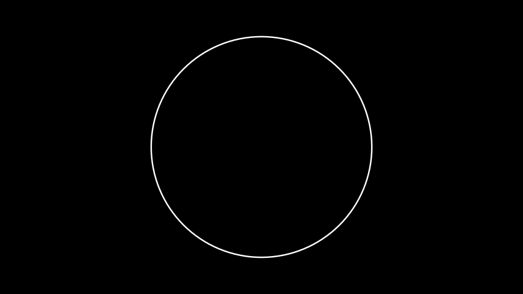
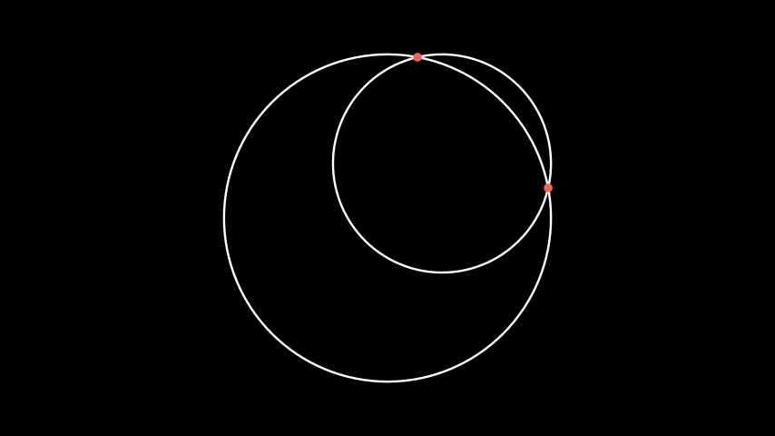
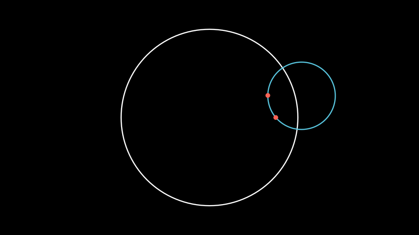
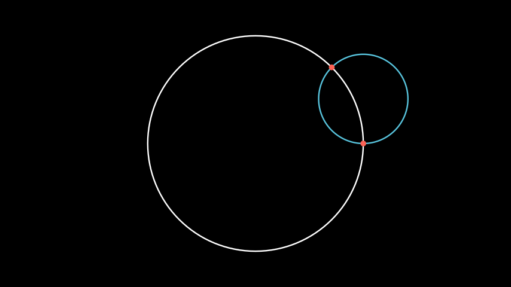
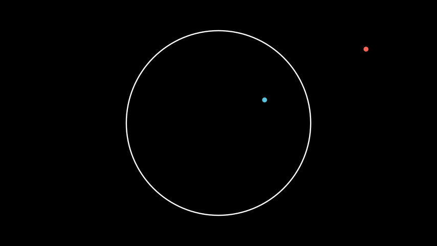

Disk¶
- class Disk(radius: float | None = None, color: ParsableManimColor = ManimColor('#FC6255'), **kwargs: Any)[source]¶
The Poincaré disk in which other hyperbolic objects live.
Examples
Example: DiskExample ¶
from manim import * from hmanim.poincare import Disk, Point class DiskExample(Scene): def construct(self): disk = Disk( radius=3, color=WHITE, ) self.add(disk)
from hmanim.poincare import Disk, Point class DiskExample(Scene): def construct(self): disk = Disk( radius=3, color=WHITE, ) self.add(disk)- static circle_intersect(c0: ndarray, r0: float, c1: ndarray, r1: float) tuple[ndarray, ndarray] | None[source]¶
Finds the intersection of two circles.
- Parameters:
c0 (np.ndarray) – The center of the first circle.
r0 (float) – The radius of the first circle.
c1 (np.ndarray) – The center of the second circle.
r1 (float) – The radius of the second circle.
- Returns:
The coordinates of the intersection points. If there are no intersection points, then None is returned.
- Return type:
tuple[np.ndarray, np.ndarray] | None
Examples
Example: CircleIntersectionExample ¶
from manim import * from hmanim.poincare import Disk, Point class CircleIntersectionExample(Scene): def construct(self): circle1 = Circle(radius=3, color=WHITE) circle2 = Circle(radius=2, color=WHITE).move_to(np.array([1, 1, 0])) self.add(circle1, circle2) intersections = Disk.circle_intersect( circle1.get_center(), circle1.radius, circle2.get_center(), circle2.radius, ) if intersections is not None: self.add( Dot(intersections[0], color=RED), Dot(intersections[1], color=RED), )
from hmanim.poincare import Disk, Point class CircleIntersectionExample(Scene): def construct(self): circle1 = Circle(radius=3, color=WHITE) circle2 = Circle(radius=2, color=WHITE).move_to(np.array([1, 1, 0])) self.add(circle1, circle2) intersections = Disk.circle_intersect( circle1.get_center(), circle1.radius, circle2.get_center(), circle2.radius, ) if intersections is not None: self.add( Dot(intersections[0], color=RED), Dot(intersections[1], color=RED), )
- coordinates_of_geodesic_circle_through(p1: Point | IdealPoint, p2: Point | IdealPoint) tuple[ndarray, float, bool] | None[source]¶
Determines the coordinates of the circle that passes through the (potentially ideal) points p1 and p2. The part of the corresponding circle that lies in the inside of the disk represents the geodesic line segment between the two points.
- Parameters:
p1 (hmanim.poincare.point.Point | IdealPoint) – The first point.
p2 (hmanim.poincare.point.Point | IdealPoint) – The second point.
- Returns:
The coordinates of the center of the circle, the radius of the circle, and a boolean indicating whether the circle center lies within the disk.
- Return type:
tuple[np.ndarray, float, bool] | None
Examples
Example: GeodesicCircleExample ¶
from manim import * from hmanim.poincare import Disk, Dot, Point class GeodesicCircleExample(Scene): def construct(self): disk = Disk( radius=3, color=WHITE, ) self.add(disk) p1 = Point(0.75, 0.0) p2 = Point(0.66, 0.25) center, radius, in_disk = disk.coordinates_of_geodesic_circle_through( p1, p2 ) circle = Circle( radius=radius, color=BLUE, ).move_to(center) self.add( circle, Dot( p1, disk=disk, color=RED, ), Dot( p2, disk=disk, color=RED, ), )
from hmanim.poincare import Disk, Dot, Point class GeodesicCircleExample(Scene): def construct(self): disk = Disk( radius=3, color=WHITE, ) self.add(disk) p1 = Point(0.75, 0.0) p2 = Point(0.66, 0.25) center, radius, in_disk = disk.coordinates_of_geodesic_circle_through( p1, p2 ) circle = Circle( radius=radius, color=BLUE, ).move_to(center) self.add( circle, Dot( p1, disk=disk, color=RED, ), Dot( p2, disk=disk, color=RED, ), )
- coordinates_of_geodesic_circle_through_ideal(p1: IdealPoint, p2: IdealPoint) tuple[ndarray, float, bool] | None[source]¶
Determines the coordinates of the circle that passes through the ideal points p1 and p2. The part of the corresponding circle that lies in the inside of the disk represents the geodesic line between the two points.
- Parameters:
p1 (IdealPoint) – The first ideal point.
p2 (IdealPoint) – The second ideal point.
- Returns:
The coordinates of the center of the circle, the radius of the circle, and a boolean indicating whether the circle center lies within the disk.
- Return type:
tuple[np.ndarray, float, bool] | None
Examples
Example: IdealGeodesicCircleExample ¶
from manim import * from hmanim.poincare import Disk, Dot, IdealPoint class IdealGeodesicCircleExample(Scene): def construct(self): disk = Disk( radius=3, color=WHITE, ) self.add(disk) p1 = IdealPoint(angle=0) p2 = IdealPoint(angle=TAU / 8) center, radius, in_disk = disk.coordinates_of_geodesic_circle_through_ideal( p1, p2 ) circle = Circle( radius=radius, color=BLUE, ).move_to(center) self.add( circle, Dot( p1, disk=disk, color=RED, ), Dot( p2, disk=disk, color=RED, ), )
from hmanim.poincare import Disk, Dot, IdealPoint class IdealGeodesicCircleExample(Scene): def construct(self): disk = Disk( radius=3, color=WHITE, ) self.add(disk) p1 = IdealPoint(angle=0) p2 = IdealPoint(angle=TAU / 8) center, radius, in_disk = disk.coordinates_of_geodesic_circle_through_ideal( p1, p2 ) circle = Circle( radius=radius, color=BLUE, ).move_to(center) self.add( circle, Dot( p1, disk=disk, color=RED, ), Dot( p2, disk=disk, color=RED, ), )
- point_by_inverting(p: Point) Point[source]¶
Invert a class:hmanim.poincare.point.Point in the disk.
Note
For more information on the inversion, see https://en.wikipedia.org/wiki/Inversive_geometry#Inversion_in_a_circle.
- Parameters
point (hmanim.poincare.point.Point): The point to invert.
- Returns
The inverted point.
Examples
Example: DiskPointInversionExample ¶
from manim import * from hmanim.poincare import Disk, Dot, Point class DiskPointInversionExample(Scene): def construct(self): disk = Disk(radius=3, color=WHITE) self.add(disk) point = Point(0.5, 0.25) inverted = disk.point_by_inverting(point) self.add( Dot( point, disk=disk, color=BLUE, ), Dot( inverted, disk=disk, color=RED, ), )
from hmanim.poincare import Disk, Dot, Point class DiskPointInversionExample(Scene): def construct(self): disk = Disk(radius=3, color=WHITE) self.add(disk) point = Point(0.5, 0.25) inverted = disk.point_by_inverting(point) self.add( Dot( point, disk=disk, color=BLUE, ), Dot( inverted, disk=disk, color=RED, ), )
- point_from_scaled(coordinates: Sequence[float]) Point[source]¶
The inverse of the
scaled_point()method. Converts a point from the canvas to the unit disk.- Parameters:
coordinates (Sequence[float]) – The coordinates of the point which we
disk. (want to convert back to a point within the unit)
- Returns:
The point within the unit disk.
- Return type:
- scaled_point(p: Point) ndarray[source]¶
Used to convert a point from within unit disk (as is used to represent the Poincaré disk) to the scaled version that we use for drawing. Essentially, this allows us to draw the Poincaré (unit) disk as a disk of arbitrary radius on the canvas.
- Parameters:
p (hmanim.poincare.point.Point) – The point to scale.
- Returns:
The coordinates of the scaled point.
- Return type:
np.ndarray